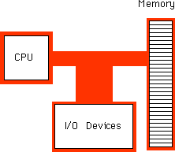
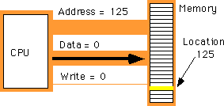
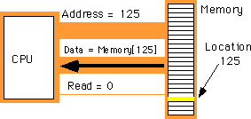
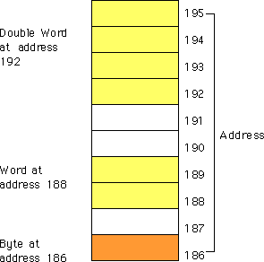
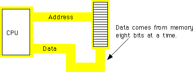
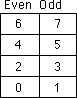
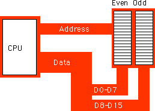
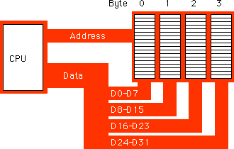

| Table of Content | Chapter Three (Part 2) |
|
| Table of Content | Chapter Three (Part 2) |
|
| CHAPTER
THREE: SYSTEM ORGANIZATION (Part 1) |
||
| 3.0 -
Chapter Overview 3.1 - The Basic System Components 3.1.1 - The System Bus 3.1.1.1 - The Data Bus 3.1.1.2 - The Address Bus 3.1.1.3 - The Control Bus 3.1.2 - The Memory Subsystem 3.1.3 - The I/O Subsystem 3.2 - System Timing 3.2.1 - The System Clock 3.2.2 - Memory Access and the System Clock 3.2.3 - Wait States 3.2.4 - Cache Memory 3.3 - The 886, 8286, 8486, and 8686 "Hypothetical" Processors 3.3.1 - CPU Registers 3.3.2 - The Arithmetic & Logical Unit 3.3.3 - The Bus Interface Unit 3.3.4 - The Control Unit and Instruction Sets 3.3.5 - The x86 Instruction Set 3.3.6 - Addressing Modes on the x86 3.3.7 - Encoding x86 Instructions 3.3.8 - Step-by-Step Instruction Execution 3.3.9 - The Differences Between the x86 Processors 3.3.10 - The 886 Processor 3.3.11 - The 8286 Processor 3.3.12 - The 8486 Processor 3.3.12.1 - The 8486 Pipeline 3.3.12.2 - Stalls in a Pipeline 3.3.12.3 - Cache, the Prefetch Queue, and the 8486 3.3.12.4 - Hazards on the 8486 3.3.13 - The 8686 Processor 3.4 - I/O (Input/Output) 3.5 - Interrupts and Polled I/O |
Copyright 1996 by Randall Hyde
All rights reserved. Duplication other than for immediate display through a browser is prohibited by U.S. Copyright Law. This material is provided on-line as a beta-test of this text. It is for the personal use of the reader only. If you are interested in using this material as part of a course, please contact rhyde@cs.ucr.edu Supporting software and other materials are available via anonymous ftp from ftp.cs.ucr.edu. See the "/pub/pc/ibmpcdir" directory for details. You may also download the material from "Randall Hyde's Assembly Language Page" at URL: http://webster.ucr.edu Notes: This document does not contain the laboratory exercises, programming assignments, exercises, or chapter summary. These portions were omitted for several reasons: either they wouldn't format properly, they contained hyperlinks that were too much work to resolve, they were under constant revision, or they were not included for security reasons. Such omission should have very little impact on the reader interested in learning this material or evaluating this document. This document was prepared using Harlequin's Web Maker 2.2 and Quadralay's Webworks Publisher. Since HTML does not support the rich formatting options available in Framemaker, this document is only an approximation of the actual chapter from the textbook. If you are absolutely dying to get your hands on a version other than HTML, you might consider having the UCR Printing a Reprographics Department run you off a copy on their Xerox machines. For details, please read the following EMAIL message I received from the Printing and Reprographics Department:
We are currently working on ways to publish this text in a form other than HTML (e.g., Postscript, PDF, Frameviewer, hard copy, etc.). This, however, is a low-priority project. Please do not contact Randall Hyde concerning this effort. When something happens, an announcement will appear on "Randall Hyde's Assembly Language Page." Please visit this WEB site at http://webster.ucr.edu for the latest scoop. Redesigned 10/2000 with "MS FrontPage 98" using
17" monitor 1024x768 |
|
To write even a modest 80x86 assembly language program requires considerable familiarity with the 80x86 family. To write good assembly language programs requires a strong knowledge of the underlying hardware. Unfortunately, the underlying hardware is not consistent. Techniques that are crucial for 8088 programs may not be useful on 80486 systems. Likewise, programming techniques that provide big performance boosts on an 80486 chip may not help at all on an 80286. Fortunately, some programming techniques work well whatever microprocessor you're using. This chapter discusses the effect hardware has on the performance of computer software.
This chapter describes the basic components that make up a computer system: the CPU, memory, I/O, and the bus that connects them. Although you can write software that is ignorant of these concepts, high performance software requires a complete understanding of this material.
This chapter begins by discussing bus organization and memory organization. These two hardware components will probably have a bigger performance impact on your software than the CPU's speed. Understanding the organization of the system bus will allow you to design data structures that operate and maximum speed. Similarly, knowing about memory performance characteristics, data locality, and cache operation can help you design software that runs as fast as possible. Of course, if you're not interested in writing code that runs as fast as possible, you can skip this discussion; however, most people do care about speed at one point or another, so learning this information is useful.
Unfortunately, the 80x86 family microprocessors are a complex group and often overwhelm beginning students. Therefore, this chapter describes four hypothetical members of the 80x86 family: the 886, 8286, the 8486, and the 8686 microprocessors. These represent simplified versions of the 80x86 chips and allow a discussion of various architectural features without getting bogged down by huge CISC instruction sets. This text uses the x86 hypothetical processors to describe the concepts of instruction encoding, addressing modes, sequential execution, the prefetch queue, pipelining, and superscalar operation. Once again, these are concepts you do not need to learn if you only want to write correct software. However, if you want to write fast software as well, especially on advanced processors like the 80486, Pentium, and beyond, you will need to learn about these concepts.
Some might argue that this chapter gets too involved with computer architecture. They feel such material should appear in an architectural book, not an assembly language programming book. This couldn't be farther from the truth! Writing good assembly language programs requires a strong knowledge of the architecture. Hence the emphasis on computer architecture in this chapter.
The basic operational design of a computer system is called its architecture. John Von Neumann, a pioneer in computer design, is given credit for the architecture of most computers in use today. For example, the 80x86 family uses the Von Neumann architecture (VNA). A typical Von Neumann system has three major components: the central processing unit (or CPU), memory, and input/output (or I/O). The way a system designer combines these components impacts system performance:

In VNA machines, like the 80x86 family, the CPU is where all the action takes place. All computations occur inside the CPU. Data and CPU instructions reside in memory until required by the CPU. To the CPU, most I/O devices look like memory because the CPU can store data to an output device and read data from an input device. The major difference between memory and I/O locations is the fact that I/O locations are generally associated with external devices in the outside world.
The system bus connects the various components of a VNA machine. The 80x86 family has three major busses: the address bus, the data bus, and the control bus. A bus is a collection of wires on which electrical signals pass between components in the system. These busses vary from processor to processor. However, each bus carries comparable information on all processors; e.g., the data bus may have a different implementation on the 80386 than on the 8088, but both carry data between the processor, I/O, and memory.
A typical 80x86 system component uses standard TTL logic levels. This means each wire on a bus uses a standard voltage level to represent zero and one. We will always specify zero and one rather than the electrical levels because these levels vary on different processors (especially laptops).
The 80x86 processors use the data bus to shuffle data between the various components in a computer system. The size of this bus varies widely in the 80x86 family. Indeed, this bus defines the "size" of the processor.
On typical 80x86 systems, the data bus contains eight, 16, 32, or 64 lines. The 8088 and 80188 microprocessors have an eight bit data bus (eight data lines). The 8086, 80186, 80286, and 80386SX processors have a 16 bit data bus. The 80386DX, 80486, and Pentium Overdrive' processors have a 32 bit data bus. The Pentium' and Pentium Pro processors have a 64 bit data bus. Future versions of the chip (the 80686/80786?) may have a larger bus.
Having an eight bit data bus does not limit the processor to eight bit data types. It simply means that the processor can only access one byte of data per memory cycle (see "The Memory Subsystem" for a description of memory cycles). Therefore, the eight bit bus on an 8088 can only transmit half the information per unit time (memory cycle) as the 16 bit bus on the 8086. Therefore, processors with a 16 bit bus are naturally faster than processors with an eight bit bus. Likewise, processors with a 32 bit bus are faster than those with a 16 or eight bit data bus. The size of the data bus affects the performance of the system more than the size of any other bus.
You'll often hear a processor called an eight, 16, 32, or 64 bit processor. While there is a mild controversy concerning the size of a processor, most people now agree that the number of data lines on the processor determines its size. Since the 80x86 family busses are eight, 16, 32, or 64 bits wide, most data accesses are also eight, 16, 32, or 64 bits. Although it is possible to process 12 bit data with an 8088, most programmers process 16 bits since the processor will fetch and manipulate 16 bits anyway. This is because the processor always fetches eight bits. To fetch 12 bits requires two eight bit memory operations. Since the processor fetches 16 bits rather than 12, most programmers use all 16 bits. In general, manipulating data which is eight, 16, 32, or 64 bits in length is the most efficient.
Although the 16, 32, and 64 bit members of the 80x86 family can process data up to the width of the bus, they can also access smaller memory units of eight, 16, or 32 bits. Therefore, anything you can do with a small data bus can be done with a larger data bus as well; the larger data bus, however, may access memory faster and can access larger chunks of data in one memory operation. You'll read about the exact nature of these memory accesses a little later (see "The Memory Subsystem").
| Processor | Data Bus Size |
|---|---|
| 8088 | 8 |
| 80188 | 8 |
| 8086 | 16 |
| 80186 | 16 |
| 80286 | 16 |
| 80386sx | 16 |
| 80386dx | 32 |
| 80486 | 32 |
| 80586 class/ Pentium (Pro) | 64 |
3.1.1.2 The Address Bus
The data bus on an 80x86 family processor transfers information between a particular memory location or I/O device and the CPU. The only question is, "Which memory location or I/O device? " The address bus answers that question. To differentiate memory locations and I/O devices, the system designer assigns a unique memory address to each memory element and I/O device. When the software wants to access some particular memory location or I/O device, it places the corresponding address on the address bus. Circuitry associated with the memory or I/O device recognizes this address and instructs the memory or I/O device to read the data from or place data on the data bus. In either case, all other memory locations ignore the request. Only the device whose address matches the value on the address bus responds.
With a single address line, a processor could create exactly two unique addresses: zero and one. With n address lines, the processor can provide 2**n unique addresses (since there are 2**n unique values in an n-bit binary number). Therefore, the number of bits on the address bus will determine the maximum number of addressable memory and I/O locations. The 8088 and 8086, for example, have 20 bit address busses. Therefore, they can access up to 1,048,576 (or 2**20) memory locations. Larger address busses can access more memory. The 8088 and 8086, for example, suffer from an anemic address space - their address bus is too small. Later processors have larger address busses:
| Processor | Address Bus Size | Max Addressable Memory | In English! |
|---|---|---|---|
| 8088 | 20 | 1,048,576 | One Megabyte |
| 8086 | 20 | 1,048,576 | One Megabyte |
| 80188 | 20 | 1,048,576 | One Megabyte |
| 80186 | 20 | 1,048,576 | One Megabyte |
| 80286 | 24 | 16,777,216 | Sixteen Megabytes |
| 80386sx | 24 | 16,777,216 | Sixteen Megabytes |
| 80386dx | 32 | 4,294,976,296 | Four Gigabytes |
| 80486 | 32 | 4,294,976,296 | Four Gigabytes |
| 80586 / Pentium (Pro) | 32 | 4,294,976,296 | Four Gigabytes |
Future 80x86 processors will probably support 48 bit address busses. The time is coming when most programmers will consider four gigabytes of storage to be too small, much like they consider one megabyte insufficient today. (There was a time when one megabyte was considered far more than anyone would ever need!) Fortunately, the architecture of the 80386, 80486, and later chips allow for an easy expansion to a 48 bit address bus through segmentation.
The control bus is an eclectic collection of signals that control how the processor communicates with the rest of the system. Consider for a moment the data bus. The CPU sends data to memory and receives data from memory on the data bus. This prompts the question, "Is it sending or receiving?" There are two lines on the control bus, read and write, which specify the direction of data flow. Other signals include system clocks, interrupt lines, status lines, and so on. The exact make up of the control bus varies among processors in the 80x86 family. However, some control lines are common to all processors and are worth a brief mention.
The read and write control lines control the direction of data on the data bus. When both contain a logic one, the CPU and memory-I/O are not communicating with one another. If the read line is low (logic zero), the CPU is reading data from memory (that is, the system is transferring data from memory to the CPU). If the write line is low, the system transfers data from the CPU to memory.
The byte enable lines are another set of important control lines. These control lines allow 16, 32, and 64 bit processors to deal with smaller chunks of data. Additional details appear in the next section.
The 80x86 family, unlike many other processors, provides two distinct address spaces: one for memory and one for I/O. While the memory address busses on various 80x86 processors vary in size, the I/O address bus on all 80x86 CPUs is 16 bits wide. This allows the processor to address up to 65,536 different I/O locations. As it turns out, most devices (like the keyboard, printer, disk drives, etc.) require more than one I/O location. Nonetheless, 65,536 I/O locations are more than sufficient for most applications. The original IBM PC design only allowed the use of 1,024 of these.
Although the 80x86 family supports two address spaces, it does not have two address busses (for I/O and memory). Instead, the system shares the address bus for both I/O and memory addresses. Additional control lines decide whether the address is intended for memory or I/O. When such signals are active, the I/O devices use the address on the L.O. 16 bits of the address bus. When inactive, the I/O devices ignore the signals on the address bus (the memory subsystem takes over at that point).
A typical 80x86 processor addresses a maximum of 2**n different memory locations, where n is the number of bits on the address bus. As you've seen already, 80x86 processors have 20, 24, and 32 bit address busses (with 48 bits on the way).
Of course, the first question you should ask is, "What exactly is a memory location?" The 80x86 supports byte addressable memory. Therefore, the basic memory unit is a byte. So with 20, 24, and 32 address lines, the 80x86 processors can address one megabyte, 16 megabytes, and four gigabytes of memory, respectively.
Think of memory as a linear array of bytes. The address of the first byte is zero and the address of the last byte is (2**n)-1. For an 8088 with a 20 bit address bus, the following pseudo-Pascal array declaration is a good approximation of memory:
Memory: array [0..1048575] of byte;
To execute the equivalent of the Pascal statement "Memory [125] := 0;" the CPU places the value zero on the data bus, the address 125 on the address bus, and asserts the write line (since the CPU is writing data to memory:

To execute the equivalent of "CPU := Memory [125];" the CPU places the address 125 on the address bus, asserts the read line (since the CPU is reading data from memory), and then reads the resulting data from the data bus:

The above discussion applies only when accessing a single byte in memory. So what happens when the processor accesses a word or a double word? Since memory consists of an array of bytes, how can we possibly deal with values larger than eight bits?
Different computer systems have different solutions to this problem. The 80x86 family deals with this problem by storing the L.O. byte of a word at the address specified and the H.O. byte at the next location. Therefore, a word consumes two consecutive memory addresses (as you would expect, since a word consists of two bytes). Similarly, a double word consumes four consecutive memory locations. The address for the double word is the address of its L.O. byte. The remaining three bytes follow this L.O. byte, with the H.O. byte appearing at the address of the double word plus three:

Bytes, words, and double words may begin at any valid address in memory. We will soon see, however, that starting larger objects at an arbitrary address is not a good idea.
Note that it is quite possible for byte, word, and double word values to overlap in memory. For example, in the figure below you could have a word variable beginning at address 193, a byte variable at address 194, and a double word value beginning at address 192. These variables would all overlap.
The 8088 and 80188 microprocessors have an eight bit data bus. This means that the CPU can transfer eight bits of data at a time. Since each memory address corresponds to an eight bit byte, this turns out to be the most convenient arrangement (from the hardware perspective), see Figure 3.5, below:

The term "byte addressable memory array" means that the CPU can address memory in chunks as small as a single byte. It also means that this is the smallest unit of memory you can access at once with the processor. That is, if the processor wants to access a four bit value, it must read eight bits and then ignore the extra four bits. Also realize that byte addressability does not imply that the CPU can access eight bits on any arbitrary bit boundary. When you specify address 125 in memory, you get the entire eight bits at that address, nothing less, nothing more. Addresses are integers; you cannot, for example, specify address 125.5 to fetch fewer than eight bits.
The 8088 and 80188 can manipulate word and double word values, even with their eight bit data bus. However, this requires multiple memory operations because these processors can only move eight bits of data at once. To load a word requires two memory operations; to load a double word requires four memory operations.
The 8086, 80186, 80286, and 80386sx processors have a 16 bit data bus. This allows these processors to access twice as much memory in the same amount of time as their eight bit brethren. These processors organize memory into two banks: an "even" bank and an "odd" bank:

The figure below illustrates the connection to the CPU (D0-D7 denotes the L.O. byte of the data bus, D8-D15 denotes the H.O. byte of the data bus):

The 16 bit members of the 80x86 family can load a word from any arbitrary address. As mentioned earlier, the processor fetches the L.O. byte of the value from the address specified and the H.O. byte from the next consecutive address. This creates a subtle problem if you look closely at the diagram above. What happens when you access a word on an odd address? Suppose you want to read a word from location 125. Okay, the L.O. byte of the word comes from location 125 and the H.O. word comes from location 126. What's the big deal? It turns out that there are two problems with this approach.
First, look again at the figure above. Data bus lines eight through 15 (the H.O. byte) connect to the odd bank, and data bus lines zero through seven (the L.O. byte) connect to the even bank. Accessing memory location 125 will transfer data to the CPU on the H.O. byte of the data bus; yet we want this data in the L.O. byte! Fortunately, the 80x86 CPUs recognize this situation and automatically transfer the data on D8-D15 to the L.O. byte.
The second problem is even more obscure. When accessing words, we're really accessing two separate bytes, each of which has its own byte address. So the question arises, "What address appears on the address bus?" The 16 bit 80x86 CPUs always place even addresses on the bus. Even bytes always appear on data lines D0-D7 and the odd bytes always appear on data lines D8-D15. If you access a word at an even address, the CPU can bring in the entire 16 bit chunk in one memory operation. Likewise, if you access a single byte, the CPU activates the appropriate bank (using a "byte enable" control line). If the byte appeared at an odd address, the CPU will automatically move it from the H.O. byte on the bus to the L.O. byte.
So what happens when the CPU accesses a word at an odd address, like the example given earlier? Well, the CPU cannot place the address 125 onto the address bus and read the 16 bits from memory. There are no odd addresses coming out of a 16 bit 80x86 CPU. The addresses are always even. So if you try to put 125 on the address bus, this will put 124 on to the address bus. Were you to read the 16 bits at this address, you would get the word at addresses 124 (L.O. byte) and 125 (H.O. byte) - not what you'd expect. Accessing a word at an odd address requires two memory operations. First the CPU must read the byte at address 125, then it needs to read the byte at address 126. Finally, it needs to swap the positions of these bytes internally since both entered the CPU on the wrong half of the data bus.
Fortunately, the 16 bit 80x86 CPUs hide these details from you. Your programs can access words at any address and the CPU will properly access and swap (if necessary) the data in memory. However, to access a word at an odd address requires two memory operations (just like the 8088/80188). Therefore, accessing words at odd addresses on a 16 bit processor is slower than accessing words at even addresses. By carefully arranging how you use memory, you can improve the speed of your program.
Accessing 32 bit quantities always takes at least two memory operations on the 16 bit processors. If you access a 32 bit quantity at an odd address, the processor will require three memory operations to access the data.
The 32 bit 80x86 processors (the 80386, 80486, and Pentium Overdrive) use four banks of memory connected to the 32 bit data bus:

The address placed on the address bus is always some multiple of four. Using various "byte enable" lines, the CPU can select which of the four bytes at that address the software wants to access. As with the 16 bit processor, the CPU will automatically rearrange bytes as necessary.
With a 32 bit memory interface, the 80x86 CPU can access any byte with one memory operation. If (address MOD 4) does not equal three, then a 32 bit CPU can access a word at that address using a single memory operation. However, if the remainder is three, then it will take two memory operations to access that word:
This is the same problem encountered with the 16 bit processor, except it occurs half as often.
A 32 bit CPU can access a double word in a single memory operation if the address of that value is evenly divisible by four. If not, the CPU will require two memory operations.
Once again, the CPU handles all of this automatically. In terms of loading correct data the CPU handles everything for you. However, there is a performance benefit to proper data alignment. As a general rule you should always place word values at even addresses and double word values at addresses which are evenly divisible by four. This will speed up your program.
Besides the 20, 24, or 32 address lines which access memory, the 80x86 family provides a 16 bit I/O address bus. This gives the 80x86 CPUs two separate address spaces: one for memory and one for I/O operations. Lines on the control bus differentiate between memory and I/O addresses. Other than separate control lines and a smaller bus, I/O addressing behaves exactly like memory addressing. Memory and I/O devices both share the same data bus and the L.O. 16 lines on the address bus.
There are three limitations to the I/O subsystem on the IBM PC: first, the 80x86 CPUs require special instructions to access I/O devices; second, the designers of the IBM PC used the "best" I/O locations for their own purposes, forcing third party developers to use less accessible locations; third, 80x86 systems can address no more than 65,536 (2**16) I/O addresses. When you consider that a typical VGA display card requires over 128,000 different locations, you can see a problem with the size of I/O bus.
Fortunately, hardware designers can map their I/O devices into the memory address space as easily as they can the I/O address space. So by using the appropriate circuitry, they can make their I/O devices look just like memory. This is how, for example, display adapters on the IBM PC work.
Accessing I/O devices is a subject we'll return to in later chapters. For right now you can assume that I/O and memory accesses work the same way.
| Table of Content | Chapter Three (Part 2) |
|
Chapter Three: System Organization
(Part 1)
26 SEP 1996